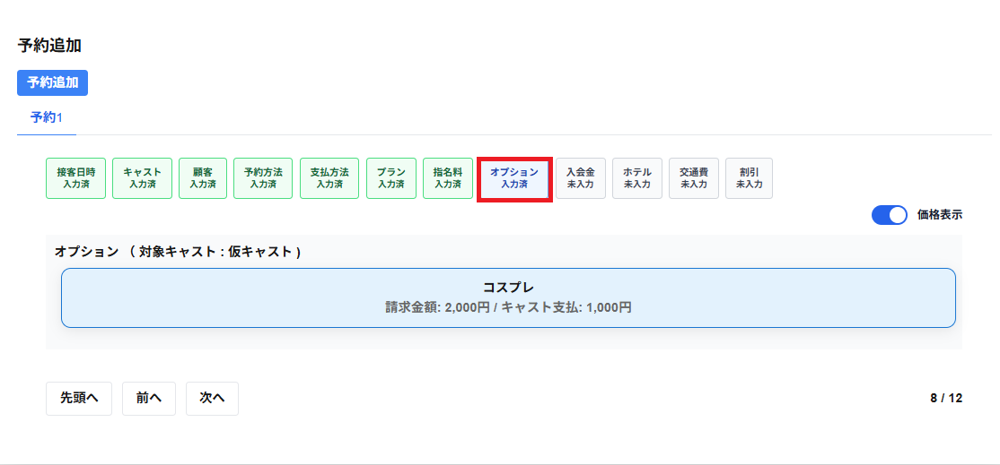

オプションをクリックすると以下の項目が表示されます。
オプションを必要に応じて選択することができます。
クリックして選択したオプションを再度クリックして選択することで、選択を解除することができます。
・対象キャスト
選択中のキャスト名が表示されます。
複数のキャストを選択している場合、キャスト別にオプションが表示され、キャスト毎にオプションを選択します。
・オプションの項目
オプションの項目が表示されます。
価格表示を選択すると、オプションの請求金額・キャスト支払・追加時刻(分)が表示されます。
※追加時刻(分)はオプションを選択することで、接客の時刻が延長されます。
